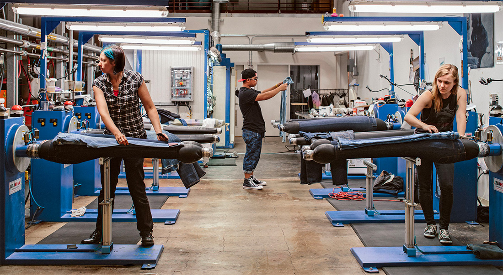
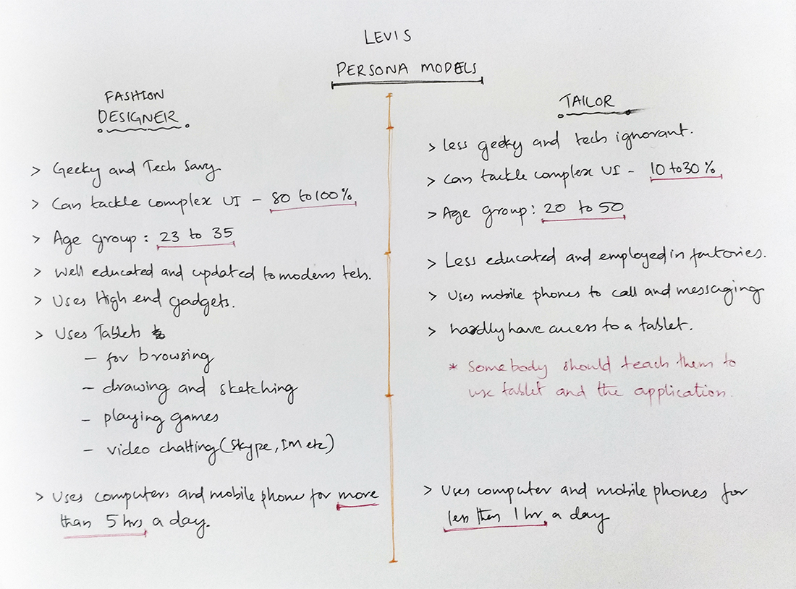
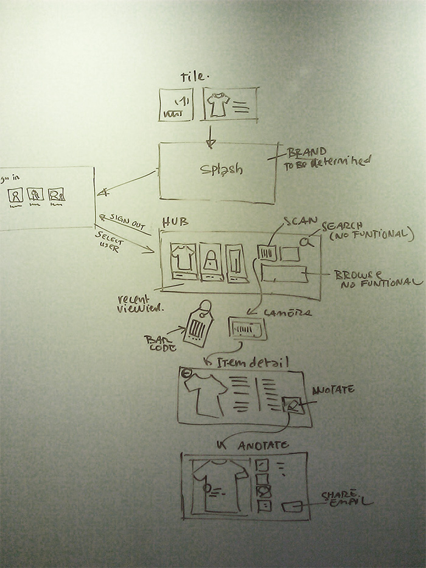
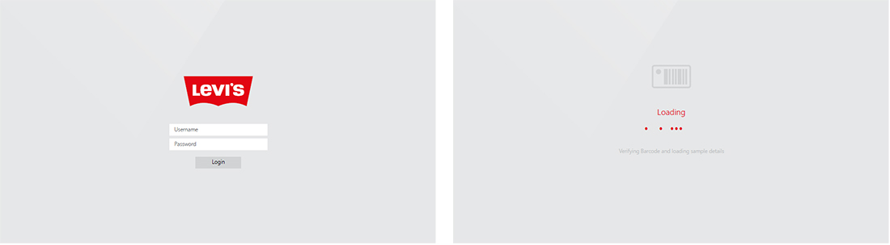
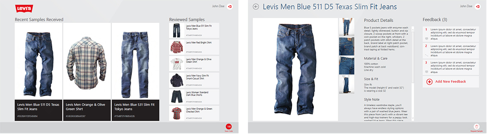
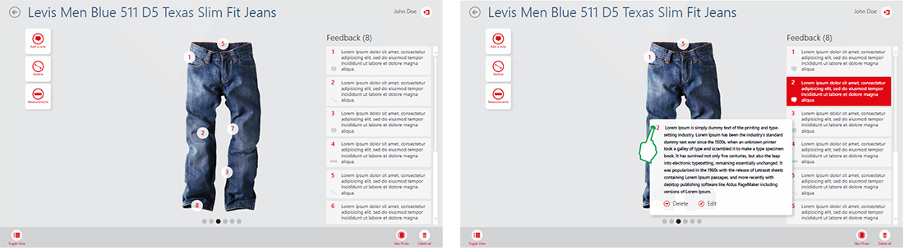
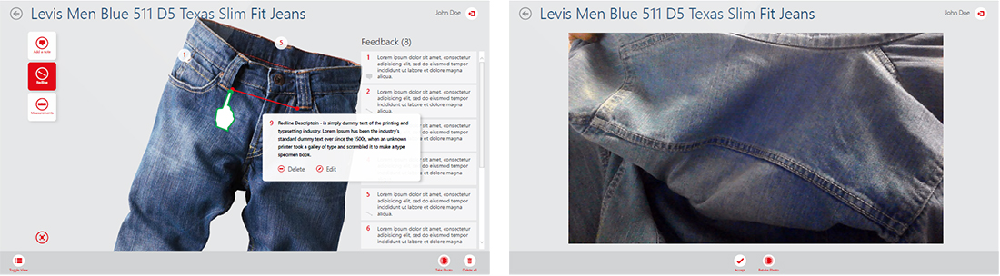
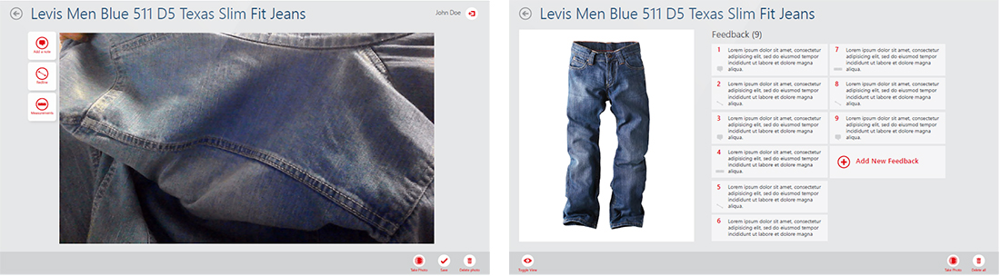

Levis looking for a method to easily have designers request and give feedback on clothing samples. Some of these actions include sending feedback through mark-ups and redlines and easy scanning to identify items by barcodes.
They asked me to design and prototype a proof of concept application to demonstrate how it would look to clients and allow them to perform some of the primary actions that they would undertake while using this application.
We tried to stay focused through the research, by making it short and effective. We gathered as much data as possible from user feedbacks, technical reports, etc. We also created a detailed competitor analysis that gave us insights of current apps and helped us to meet the priorities to differentiate our product from all the others. The research phase continued with creating assumptions, that we later validated with surveys and user interviews.
We started to ask questions who are the users we are targeting, which features would be useful to them, what goals do they need to accomplish and what are the users needs and desires.
The most important factor here is to understand the user behavior and their traits. We are dealing with two main type of users here - Fashion Designers and Tailors.
A visual representation of the user's flow to complete a tasks within the product. It's the user perspective of the site organization, making it easier to identify which steps could be improved or designed.
After a lot of validations, iterations and feedback we got to the point where out MVP had the necessary user experience that meets the user needs and can, as a developed web platform, provide the functionalities and environment to help users plan and achieve their goals.
    When we performed a usability test, we experienced interesting user behavior pattern that we didn’t predict. We noticed that 75% of our users tried to tap on the photo they were reviewing on the tablet screen (where users could share their design corrections).
After we asked them why they did this in most of the cases the answer was “I thought I can edit it”. We decided that this is a feature that is definitely worth solving to meet the user needs.
After many iterations and user testing we cam out with a proper prototype for the product and was passed on to the Levis UI Development department to make it a complete product.